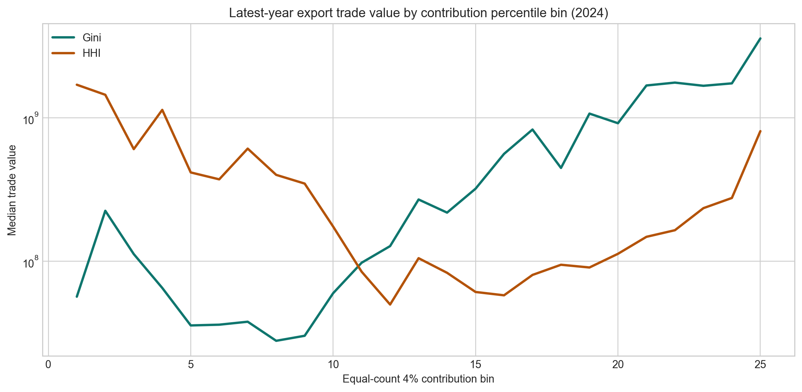
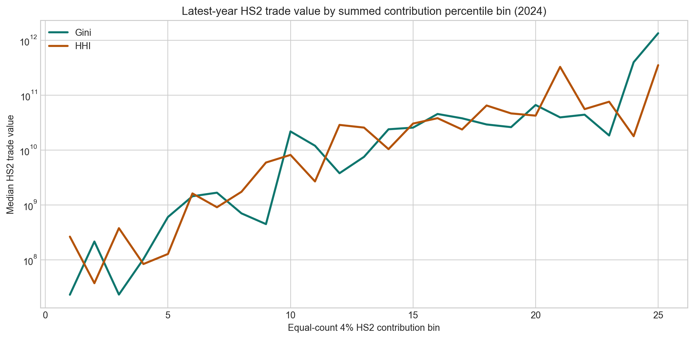

Contribution scale
How large are leave-one-out product contributions through time?
Which products drive concentration, and do those concentration-driving imports map to exports?
HS6 999999 remains excluded before conversion; tables show LT/HGL-weighted HS1992 product-family labels.
Selected metric: Gini. Shared descriptive figures, where present, are shown below and clearly separated from the metric-specific charts.
How large are leave-one-out product contributions through time?
Which products drive the largest absolute contributions?
The selected site is metric-first, but the same harmonized exercise exists for all three metrics.
These figures are required by the Cadot build; the build now fails if any referenced asset is missing.




Metric-focused table for the selected exercise page.
| Flow | HS1992 product family | Countries | Median abs. contribution | Max abs. contribution |
|---|---|---|---|---|
| Exports | HS1992 270900 | 67 | 0.004 | 0.271 |
| Exports | HS1992 090500 | 6 | 0.002 | 0.168 |
| Exports | HS1992 180100 | 21 | 0.001 | 0.160 |
| Exports | HS1992 070990 | 24 | 0.000 | 0.107 |
| Exports | HS1992 271000 | 138 | 0.001 | 0.101 |
| Exports | HS1992 710812 | 84 | 0.001 | 0.091 |
| Exports | HS1992 720241 | 6 | 0.001 | 0.077 |
| Exports | HS1992 240210 | 13 | 0.000 | 0.075 |
| Exports | HS1992 120220 | 14 | 0.000 | 0.075 |
| Exports | HS1992 710121 | 3 | 0.024 | 0.070 |
| Exports | HS1992 260300 | 36 | 0.001 | 0.065 |
| Imports | HS1992 890392 | 13 | 0.001 | 0.061 |
| Exports | HS1992 520100 | 38 | 0.000 | 0.061 |
| Exports | HS1992 030329 | 7 | 0.001 | 0.060 |
| Imports | HS1992 270900 | 90 | 0.008 | 0.059 |
| Exports | HS1992 251710 | 21 | 0.000 | 0.059 |
| Exports | HS1992 710221 | 7 | 0.000 | 0.056 |
| Exports | HS1992 220840 | 24 | 0.000 | 0.056 |
| Exports | HS1992 540834 | 2 | 0.004 | 0.055 |
| Exports | HS1992 260111 | 26 | 0.001 | 0.055 |
| Exports | HS1992 090111 | 33 | 0.001 | 0.055 |
| Imports | HS1992 271111 | 44 | 0.001 | 0.055 |
| Exports | HS1992 030219 | 13 | 0.001 | 0.055 |
| Exports | HS1992 250590 | 9 | 0.001 | 0.053 |
| Exports | HS1992 880230 | 36 | 0.000 | 0.053 |
| Imports | HS1992 710812 | 39 | 0.002 | 0.052 |
| Exports | HS1992 170111 | 43 | 0.001 | 0.052 |
| Imports | HS1992 271000 | 156 | 0.006 | 0.052 |
| Exports | HS1992 160414 | 17 | 0.001 | 0.051 |
| Exports | HS1992 880330 | 81 | 0.000 | 0.051 |
All downloads are Cadot-only staging artifacts from the harmonized rerun.
{kind=link}
{kind=link}